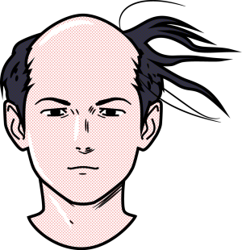
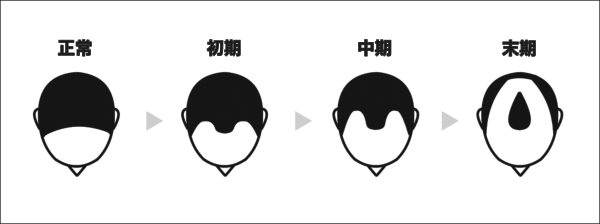
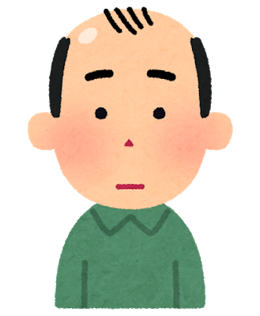

はげ方の種類について
目次
そもそもなぜハゲてしまうのか
どのようなハゲ方があるのか

M字タイプ
O字タイプ
U字タイプ
AGAの進行度合の分類
Ⅰ型
Ⅱ型
Ⅱ型vertex
Ⅲ型
Ⅲ型vertex
Ⅳ型
Ⅴ型
Ⅵ型
Ⅶ型
そもそもなぜハゲてしまうのか
若ハゲの主な原因と言われるのが、男性ホルモンの一種「ジヒドロテストステロン（DHT）」の影響です。
ジヒドロテストステロンは髪の毛の元となる毛母細胞の働きを低下させる作用があり、ヘアサイクルを乱します。
通常であれば3～6年ある成長期を、6ヶ月～1年に縮めてしまいます。
つまり、男性ホルモンが強い人ほどはげやすくなってしまうということです。
どのようなハゲ方があるのか
M字タイプ
前髪の生え際が後退することにより、正面から見たときに、Mの形になるタイプ。
AGAによる薄毛のため、医療機関を受診して適切な治療を受けるのがベスト。
治療ではシヒドロテストステロンの生成に必要な5aリグダーゼii型を阻止するフィナステリドなどの
内服薬を使用します。また、血行を促して髪の成長をサポートするミノキシジルの外用薬を使うのも効果的。
O字タイプ
頭頂部の髪の毛が薄くなり、上から見たときにOの形になるタイプ。
後頭部は自分で確認することが難しいため、家族や友人に言われて気づくケースが多い。
AGAとFAGAは頭皮環境の乱れやストレスなど様々な原因で起こります。
後ろから見たときに目立つため、帽子などで隠したくなるでしょう。
また、頭頂部は血管が少ないことで血流が不足しやすいため、血行を促すミノキシジルを使うことが大切。
ミノキシジルは外用剤のため、浸透性を高めるためにシャンプーをしてから塗りましょう。
U字タイプ
M字タイプが進行して、前頭部の髪の毛が薄くなり、正面から見たときにU字に見えるタイプです。
O字タイプと併発する場合もあります。複数の治療法を併用して、早期の改善を図りたいところ。
ミノキシジルとフェナステリドを併用することで効果的な改善が期待できます。
また、生活習慣も改善して、できるだけ髪の成長も促したいところ。
眠りはじめてから3時間の間に分泌される成長ホルモンは髪の成長に関わってきます。
睡眠の質を高めるために部屋を暗くするとや寝る前にスマホをいじらないようにすることが大切。
AGA進行度合いの分類
AGAの進行度合いは、「ハミルトン・ノーウッド分類」という分類法で分けられます。
この分類法を考えたハミルトン医師と内容を改定したノーウッド医師から名づけられました。
ハゲが気になっている方は自分がどれくらいの段階に達しているのか確認しましょう。
ハミルトン・ノーウッド分類におけるAGAの進行度合について詳しく紹介します。

I型
前髪の生え際から後退して、M字を形成しつつある状態。

Ⅱ型
I型よりも進行していて、M字のラインが深くなった状態。
Ⅱ Vertex型
Ⅱ型に加えて、O字タイプのハゲにもなっている状態。
Ⅲ型
Ⅱ型よりもM字ラインが深くなり、前頭部の髪も薄くなった状態。
Ⅲ Vertex型
Ⅲ型に加えて、O字タイプのハゲにもなっている状態
Ⅳ型
Ⅲ型よりもM字ラインが深くなり、O字タイプのハゲにもなっている状態。
Ⅴ型
Ⅳ型よりもM字が深くなり、O字タイプのハゲにもなっている状態。
Ⅵ型
M字が後退するとともにO字の範囲が広がることで、ハゲがつながった状態。
後頭部と側頭部の髪のみが残る。
Ⅶ型
Ⅵ型がさらに進行し、側頭部までも薄くなります。後頭部の髪も、頭頂部に近いところから発毛しなくなる。
～最後に～
このように、数字が大きくなるほどに、ハゲの範囲は広くなります。
できる限り、Ⅰ型の段階で治療を始めることが大切です。
早く治療を始めればそれだけ早く改善が期待できます。
ハゲに対するコンプレックスは、人とのコミュニケーションに支障をきたすため、
早めに医療機関を受診することをおすすめします。